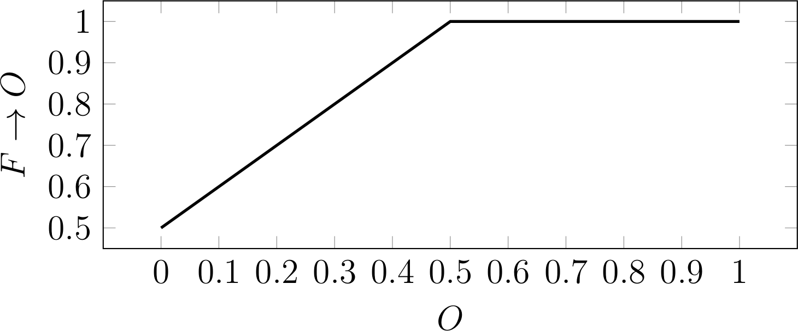

PPAL
Populational Announcement Logic
Uma lógica dinâmica epistêmica
-- Apresentação em construção --
Dissertação de mestrado de Vitor Machado, orientado pelo Prof. Mario Benevides
Representação do conhecimento
É a área que estuda modelos e sistemas para representar e raciocinar sobre conhecimento.
“Representação de conhecimento é a aplicação de lógica e ontologia à tarefa de construir modelos computáveis para algum domínio” - Sowa, inventor dos gráficos conceituais
Lógica epistêmica
Representação do conhecimento tem pouco propósito se não é possível raciocinar sobre o mesmo.
Lógicas epistêmicas são sistemas formais para lidar com representação de conhecimento. Algumas de suas ideias mais básicas, em especial no campo da filosofia, vem dos tempos da Grécia antiga.
Trabalhos importantes
- Survey of Symbolic Logic - Lewis, C. I.
- Primeira obra sistemâtica relativa ao tema
- An Essay in Modal Logic - Von Wright, G. H.
- Introduziu o conceito de "modalidades"
- Logics of public communications - Plaza, J. A.
- Reasoning about Information Change - Gerbrandy, J. e Groeneveld, P. W.
- Lógicas de anúncios públicos
Objetivo
Especificar uma variante de PAL, onde o conhecimento é representado sobre populações e grupos, ao invés de sobre agentes discretos como é comumente feito na literatura.
Motivação
Prover um framework mais fácil de se trabalhar, voltado para especificação de cenários mais próximos da realidade. Permitir evolução dinâmica das populações também, não só do conhecimento das mesmas.
Roteiro
1. Para atingir os objetivos, foi especificada uma variante "fuzzyficada" de PAL que permite anúncios parciais para suas populações. Formalizações para o modelo, linguagem e semântica são providas, bem como exemplos;
2. Foi construída também uma prova de decidibilidade da linguagem para modelos finitos, um resultado importante para verificação de modelos;
3. Foi desenvolvida ainda uma biblioteca e verificador de modelos desenvolvidos em Java que implementam a linguagem PPAL.
ENIAC 2015
Um artigo derivado desse trabalho foi aceito no Encontro Nacional de Inteligência Artificial e Computacional (ENIAC), conferência ocorrida em Natal - RN. O artigo encontra-se publicado na Biblioteca Digital Brasileira de Computação (BDBComp).
Lógica proposicional clássica
A lógica com a qual estamos acostumados a lidar na computação. Contém os conectivos $\neg$ (negação), $\land$ (conjunção), $\lor$ (disjunção) and $\to$ (implicação). Sua semântica é definida por tabelas verdade para cada conectivo, que evalua cada possível entrada em T (verdadeiro) ou F (falso).
| P | Q | P $\to$ Q |
|---|---|---|
| T | T | T |
| T | F | F |
| F | T | T |
| F | F | T |
Lógica fuzzy
Proposições podem assumir infinitos valores, não apenas T/F. Pode ser usada em controladores industriais por exemplo, quando não existe um modelo matemático claro para o problema, e se torna mais fácil traduzir conhecimento profissional em regras de controlador.
$F_\to (x, y) = min \{1, 1 - x + y\}$
Lógica modal
Operadores modais qualificam uma sentença: $\Box P$ é lido "necessariamente $P$" e $\Diamond P$ é lido "possivelmente $P$". Semântica possui estados, e relações binárias de acessibilidade entre eles. Por exemplo, $w \sim u$ significa que o estado $u$ é acessível a partir de $w$.
- $w \models \Diamond P$ se para algum estado $u \in W$ vale que $w \sim u$ e $u \models P$
- $\Box P \leftrightarrow \neg \Diamond \neg P$
Lógica epistêmica multi-agente
O operador característico da lógica epistêmica é $K$, o operador de conhecimento. Existem modalidades para os agentes da lógica, e expressões como $K_a \varphi$ (agente $a$ sabe $\varphi$) podem ser escritas.
${\cal M},s \models K_a \phi$ se e somente se para todo $s' \in S$, $s \sim_a s' \Rightarrow {\cal M},s' \models \phi$

Modelo $Hexa$: jogo de cartas
Lógica de anúncios públicos (PAL)
Operador $[ \phi ]$ de anúncio público altera o modelo, reduzindo as arestas entre os estados. $[ \phi ] \varphi$ tem o significado de "após anúncio de $\phi$, $\varphi$ é verdadeiro".

Modelo $Hexa_2 := Hexa | \neg 1_a$
Para o anúncio $Hexa, 012 \models [ \neg 1_a ] K_c 0_a$, podemos checar em $Hexa_2$.
Populational Announcement Logic (PPAL)
Nesse trabalho a Lógica de Anúncios Populacionais foi especificada, e nos próximos slides veremos mais detalhes sobre sua sintaxe e semântica, bem como exemplos.
Populações e grupos
Nesta lógica, introduzimos conceitos de populações e grupos ao invés de agentes. Anúncios agem sobre frações de populações/grupos, criando novos grupos a partir deles.
Definição: Uma população representa um conjunto de indivíduos. Uma população $P$ possui tamanho $\overline{P} \in \mathbb R_{>0}$.
Definição: Um grupo pode ser vazio, uma população ou um conjunto disjunto de grupos:
$G := \emptyset \ | \ P \ | \ \{ G_0, G_1, \dots, G_n \}$
Modelo (População)
Como veremos adiante, anúncios agem sobre frações de populações/grupos, dessa forma criando diferentes "mundos" para quem recebeu ou não o anúncio. Por esse motivo, o conceito de "muitos mundos" é aplicado.
Definição: Um modelo para uma população $P$ é composto de:
- Um conjunto de estados $T$;
- uma função de valoração $V : \Phi \to 2^T$ que indica proposições verdadeiras para cada estado;
- Uma família de relações binárias $\stackrel{M_P, G}{\sim}$ para cada grupo $G$ conhecido por esta população.
Modelo (Grupo)
Definição: Um modelo para um grupo $G= \{ G_0, G_1, \dots, G_n \}$ é definido como o conjunto de modelos de cada um dos seus grupos. Isto é, $M_G = \{ M_{G_0}, M_{G_1}, \dots, M_{G_n} \}$.
Linguagem
\[ \varphi ::= p \ | \ \neg \varphi \ | \ \varphi_1 \wedge \varphi_2 \ | \ \varphi_1 \vee \varphi_2 \ | \ \varphi_1 \rightarrow \varphi_2 \ | \\ K_G \varphi \ | \ B_G \varphi \ | \ [\varphi_1]_G^r \varphi_2 \] onde $r \in U = [0, 1]$, $G$ denota um grupo e $p \in \Phi$.
Operadores de conhecimento e anúncio
- $K_G \varphi$ e $B_G \varphi$: "o grupo $G$ sabe/acredita que $\varphi$ vale";
- $[\varphi_1]_G^r \varphi_2$: "$\varphi_2$ vale no grupo $G$ após anúncio de $\varphi_1$ para fração $r$ dos indivíduos em $G$", onde $G = \{ P_1, P_2 \}$ e $\overline{P_1} = \overline{G}r$.
- Essa expressão descreve um anúncio parcial que define duas novas populações, uma delas com conhecimento adicional e outra que não recebeu nenhuma nova informação.
Semântica (Proposição)
Definimos valorações para cada expressão da linguagem, começando pela proposição simples: \[ E_{M_G, s}(p) = e(p, (M_S, s)) \] Ou seja, a proposição é evaluada sobre um modelo e um estado, de acordo com uma função de valoração $e : p \times (M_G, s) \rightarrow U$, que pode ser simplesmente algo como $e(p, (M_S, s)) = 1$ se $p \in V(p)$, e $0$ caso contrário.
Semântica ($\neg$, $\land$, $\lor$, $\to$)
Os outros operadores são definidos utilizando-se de funções, que posteriormente definiremos a partir de suas propriedades. \[\begin{aligned} E_{M_G, s}(\neg \varphi) & = NOT(E_{M_G, s}(\varphi)) \\ E_{M_G, s}(\varphi \wedge \psi) & = AND(E_{M_G, s}(\varphi), E_{M_G, s}(\psi)) \\ E_{M_G, s}(\varphi \vee \psi) & = OR(E_{M_G, s}(\varphi), E_{M_G, s}(\psi)) \\ E_{M_G, s}(\varphi \rightarrow \psi) & = IMP(E_{M_G, s}(\varphi), E_{M_G, s}(\psi)) \end{aligned} \]
Negação Fuzzy
Um operador unário $NOT : U \rightarrow U$ é uma negação fuzzy se:
Por exemplo, uma possível função de negação é $NOT(x) = 1 - x$.
Exemplos de negação
- $NOT(0.2) = 0.8$;
- $NOT(0.8) = 0.2$;
- $NOT(0.5) = 0.5$.
Conjunção Fuzzy
Um operador binário $AND : U \times U \rightarrow U$ é uma conjunção fuzzy se:
Por exemplo, uma possível função de conjunção é $AND(x, y) = min\{x, y\}$.
Exemplos de conjunção
- $AND(0, 1) = 0$;
- $AND(0.5, 1) = 0.5$;
- $AND(0.2, 0.8) = 0.2$;
- $AND(0.8, 0.2) = 0.2$.
Disjunção Fuzzy
Um operador binário $OR : U \times U \rightarrow U$ é uma disjunção fuzzy se:
Por exemplo, uma possível função de disjunção é $OR(x, y) = max\{x, y\}$.
Exemplos de disjunção
- $OR(1, 0) = 1$;
- $OR(0.5, 0) = 0.5$;
- $OR(0.2, 0.8) = 0.8$;
- $OR(0.8, 0.2) = 0.8$.
Implicação Fuzzy
Um operador binário $IMP : U \times U \rightarrow U$ é uma implicação fuzzy se:
Por exemplo, uma possível função de disjunção é $IMP(x, y) = min\{1, 1 - x + y\}$, também conhecida como implicação de Łukasiewicz (originária da lógica fuzzy de mesmo nome).
Exemplos de implicação
- $IMP(0.2, 0.8) = 1$;
- $IMP(0.5, 0.5) = 1$;
- $IMP(0.8, 0.2) = 0.4$;
- $IMP(1, 0.1) = 0.1$.
Conhecimento Fuzzy
Um operador ternário $K : \phi \times (M_S, S) \times G \rightarrow U$ é uma checagem de conhecimento fuzzy se:
Conhecimento Fuzzy (Função)
Por exemplo, uma possível função de checagem de conhecimento é $$K(\varphi, (M_S, s), G) = \left\{ \begin{array}{ll} \sum_{G' \in G} \frac{\overline{G'}}{\overline{G}} K(\varphi, (M_S, s), G') & \text{se} \ G = \{ G_0, G_1, \dots, G_n \} \text{,} \\ 1 & \text{se} \ G = P \ \text{e} \ \forall s' \in T ~| ~s \stackrel{M_S, P}{\sim} s' \rightarrow E_{M_S, s'}(\varphi) \text{,} \\ 0 & \text{caso contrário.} \end{array} \right.$$ Intuitivamente, significa que o conhecimento de um grupo é igual à média ponderada dos grupos contidos nele, e é igual a $1$ quando o grupo é igual a uma única população e $\varphi$ é verdadeiro em cada estado conectado ao estado $s$ via $\stackrel{M_S, G}{\sim}$, e $0$ caso contrário. Uma única população sabe algo apenas quando é verdadeiro em todo mundo concebível que essa população contempla.
Crença Fuzzy
Um operador ternário $B : \phi \times (M_S, S) \times G \rightarrow U$ é uma checagem de crença fuzzy se:
Crença Fuzzy (Função)
Por exemplo, uma possível função de checagem de crença é
$$B(\varphi, (M_S, s), G) = \left\{
\begin{array}{ll}
\sum_{G' \in G} \frac{\overline{G'}}{\overline{G}} B(\varphi, (M_S, s), G') & \text{se} \ G = \{ G_0, G_1, \dots, G_n \} \text{,} \\
\sum_{s' \in N_s} \frac{E_{M_S, s'}(\varphi)}{\overline{N_s}} & \text{se} \ G = P \text{,} \\
0 & \text{caso contrário.}
\end{array}
\right.$$
onde $N_s = \bigcup_{s' \in T | s \stackrel{M_S, G}{\sim} s'} s'$ são os vizinhos de $s$ via relação $\stackrel{M_S, G}{\sim}$.
É funcionalmente similar a $K$, mas permite qualquer número no intervalo $[0, 1]$. Por exemplo, se em metade dos estados conectados ao estado $s$ via $\stackrel{M_S, P}{\sim}$, $\varphi$ evaluar para $1$ e na outra metade para $0$, então $B(\varphi, (M_S, s), P) = 0,5$. Também similar a $K$, a crença de um grupo é igual à média ponderada dos seus grupos constituintes.
Decidibilidade
Um aspecto importante da verificação de modelos é a decidibilidade, que está relacionada com o problema de parada: existe alguma fórmula na linguagem que pode fazer o verificador ficar preso em um loop?
Decidibilidade (Indução)
É mostrado que a lógica é decidível através de indução no tamanho $s$ da expressão BNF.
O tamanho $s$ para cada expressão é definido como:
- $s(p) = 1$;
- $s(\varphi_1 \wedge \varphi_2) = s(\varphi_1) + s(\varphi_2) + 1$;
- $s(\varphi_1 \vee \varphi_2) = s(\varphi_1) + s(\varphi_2) + 1$;
- $s(\varphi_1 \rightarrow \varphi_2) = s(\varphi_1) + s(\varphi_2) + 1$;
- $s(K_G \varphi) = s(\varphi) + 1 + \overline{G}$;
- $s(B_G \varphi) = s(\varphi) + 1 + \overline{G}$;
- $s([\varphi_1]_G^r \varphi_2) = s(\varphi_1) + s(\varphi_2) + 1 + \overline{G}$.
Base $s = 1$
$E_{M_G, s}(p) = e(p, (M_G, s))$ evalua para $1$ ou $0$ em um modelo finito, e portanto é decidível.
Hipótese de indução
Consideramos a hipótese de indução como sendo "qualquer fórmula de tamanho $s$ é decidível". Agora ainda é necessário realizar o passo indutivo e mostrar que qualquer fórmula com tamanho $s + \delta$ são decidíveis, onde $\delta \in \mathbb R_{>0}$.
Passo indutivo (1)
$E_{M_G, s}(\neg \varphi)$, $E_{M_G, s}(\varphi \wedge \psi)$, $E_{M_G, s}(\varphi \vee \psi)$ e $E_{M_G, s}(\varphi \rightarrow \psi)$ são trivialmente decidíveis pois são fórmulas simples e $E_{M_G, s}(\varphi)$ e $E_{M_G, s}(\psi)$ são decidíveis por hipótese.
Passo indutivo (2)
$E_{M_G, s}(K_{G'} \varphi)$
- Trivialmente decidível quando $G' = \emptyset$, evalua sempre para $0$;